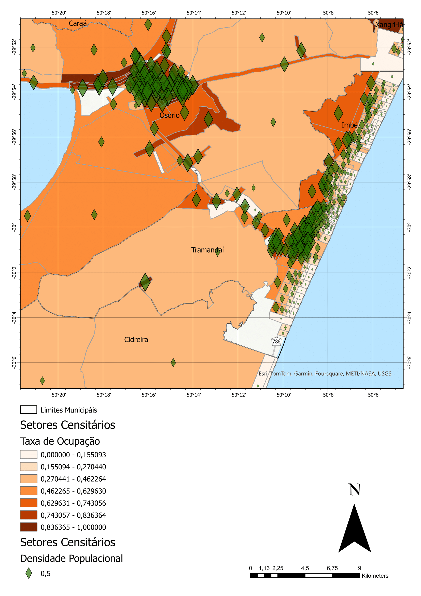

Relatório
Introdução
Nesse relatório serão apresentados os trabalhos desenvolvidos na disciplina de Cartografia Temática e Digital ministrada pelo Prof. Dr. Guilherme Garcia de Oliveira na UFRGS - CLN em 2024.1. Serão mostrados os mapas desenvolvidos assim como os dados e metodogias utilizados para essa confecção.
Atividades
Teoria (20/03 - 24/04)
Na primeira parte da disciplina foi feita uma discução téorica do campos da cartografia digital e suas aplicações. Foram revistos os principios de cartografia, já apresentados em disciplina anterior, e demosntrados os conceitos princiapais de cartografia com escala, generalização, simbologia e localização.
Como avalização dessa parte foi realizada uma prova online e um primeiro mapa com dados do IEDE-RS e IBGE. O mapa produzido por mim foi este: 
{kind=link}
Nesse mapa foi calculada Densidade Populacional de cada Setor Censitário da região do entorno do CLN-UFRGS(apresentados com losangos verdes) e a Taxa de Ocupação dos imóveis(apresentado em tons de laranja)
Mancha de Inundação (03/07 - 10/07)
Após a paralização causada pelas inundações no estado foi apresentada uma metodologia elaborada pelo Professor para a estimativa de manchas de inudanção. Ela consiste nos seguintes passos:
Identificar nas imagens de satélite qual o limite da área inundada visível da imagem. Foi escolhida uma escala e seleção de banda que garantisse o contraste entre as áreas secas e alagadas,

Marcar pontos de referência para o calculo de nível. Foram marcados pontos ao longo da margem do rio que eram vizivelmente limites entre a água e a terra. Na imagem vemos os pontos sobre um modelo MDE.

Interpolar nivel da água Partindo dos dados de elevação disponíveis pelo FABDEM(HAWKER & NEAL 2021), foi interpolado pelo método de Krigagem qual o nivel da água em cada ponto do mapa partindo da amostragem da eleção nos pontos selecionados

Construir a mancha de inudação Conhecendo o nível da água em cada ponto foi possivel comparar a altura do ponto, onde a elevação é menor que o nível da água foi considerado como área alagado.
 A partir do dado foi elaborado o seguinte mapa, ainda incompleto:
A partir do dado foi elaborado o seguinte mapa, ainda incompleto: 
Este mapa apresenta a Mancha de Inundação Estimada no município de Canoas-RS. Foram utlizadas imagens do satélite Planet e a mancha foi colorida de acordo com o Nível da Água Estimado(tons de azul)
Mapa de Elevação e Declividade (17/07 - 24/07)
Nessa etapa construímos mapas geomorfológicos para acompanhar os mapas de inundação que seriam produzidos. Foram apresentadas técnicas como curvas de nível e hillshade, que podem ser observadas na próxima imagem. 
Além disso também foi feito o processamento do dado de declividade. 
Mapas Temáticos da Inundação (31/07 - 21/08)
Foram desenvolvidos alguns mapas durantes essas 3 semanas utilizando os dados que foram produzidos em conjunto com dados de outras fontes como da Defesa Civil e Geodédia da UFRGS. Os mapas todos se focaram na região da Bacia Hidrográfica do Guaíba e foram feitas em escala 1:650.000
Mapa de Elevação
Utilizando os dados de elevação processados anteriormente foi produzido o seguinte mapa: 
Este mapa apresenta os valores de Elevação na região da Bacia Hidrográfica do Guaíba(tons de verde, amarelo e laranja), assim como seus principais Corpos Hídricos(área em azul) e os limites dos 9 Sub-Bacias(linha preta) que compõem a bacia
Mapa de Movimentos de Massa
Utilizando os dados de declividade e dos movimentos de massa foi elaborado o seguinte mapa: 
Este mapa apresenta os valores de Declividade na mesma região (tons de azul, verde e amarelo), Corpos Hídricos(área em azul) e os Limites das Sub-Bacias(linha preta). Também apresenta os Movimentos de Massa(linhas vermelhas) identificadas pelos pesquisadores do LATITUDE/CEPSRM/UFRGS
Mapa da Inundação
Utilizando os dados da mancha de inundação e as curvas de nível foi elaborado o seguinte mapa: 
Este mapa apresenta a Curvas de Nível na região(linhas amarelo), Corpos Hídricos(área em azul claro) e os Limites das Sub-Bacias(linha preta). O foco porém é na Mancha de Inundação(área em azul escuro) estimada pelos pesquisadores do LAGAM/CEPSRM/UFRGS
Mapa de chuvas
Foi elaborado um mapa com a estimativa da chuva na região, porém me ausentei e não fiz a confecção desse mapa. Como exemplo está o mapa produzido pela aluna Juliana Mayer de Souza 
Mapa de Impacto
Por fim foi feito um mapa contendo dados de impactos da inundação na região. Foram utilizados dados do S2id do Governo Federal. O meu mapa foi sobre o impacto material na região: 
Este mapa apresenta a Mancha de Inundação(área em roxo) junto do Prejuízo Material Estimado(tons de amarelo e vermelho) para cada município a partir dos dados do S2id
Conclusões
Ao longo dos últimos meses a turma desenvolveu uma série de trabalhos que exploram as diferentes faces da cartografia temática e digital. Algumas das habilidades desenvolvidas foram:
- Busca e levantamento de dados geoespaciais
- Tratamento e Processamento de dados
- Ferramentas do ArcGIS
- Countour
- Hillshade
- Simbologia
- Layout
- Elaboração de mapas de diferentes tipos
- Político
- Geomorfológico
- Pluvial
- Demográfico
- Mapa de Impacto
- Visualização de Dados e Estimativas
A experiência foi muito prazeirosa e me sinto pronto e animado para seguir aprendendo e densenvolvendo minhas habilidade em cartografia e pesquisa geoespacial. Agradeço muito aos colegas de turma pela ajuda nesse semestre tão complicado e especialmente ao professor pela infinita paciência e vontade de ensinar.